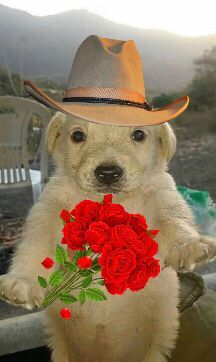

TE AMOOOOOOOOOOO
(Sube el volumen) 
Hola guapoteeeeee
¡Feliz 14 de febrero!
Sé que no pudimos vernos hoy, pero quise sorprenderte con este detallito y espero que te guste mucho. Solo paso para decirte que te amo muchisimo y te agradezco por estos casi 2 años que hemos estado juntos.
Quiero recordarte que siempre voy a estar para ti, en las buenas y en las malas, y que nunca, nunca, nunca te voy a dejar de amar. Eres mi persona especial y siempre voy a seguir intentando hacerte feliz por el resto de nuestras vidas.
Gracias por estar conmigo y permitirme ser parte de tu vida. Valoro mucho todo lo que haces y has hecho por mí, porque me haces el hombre más feliz del mundo.
Aunque no pudimos estar juntos hoy, te llevo en mi corazón en todo momento y sé que tú también me llevas en el tuyo.
Este pequeño detalle es solo una muestra de lo mucho que te amo. Espero que te guste y que te haga sentir tan especial como tú me haces sentir a mí.
No puedo esperar a verte, darte muchísimos besos y apapachos.
Suerte en tus clases. Te amo muchoo UWU.